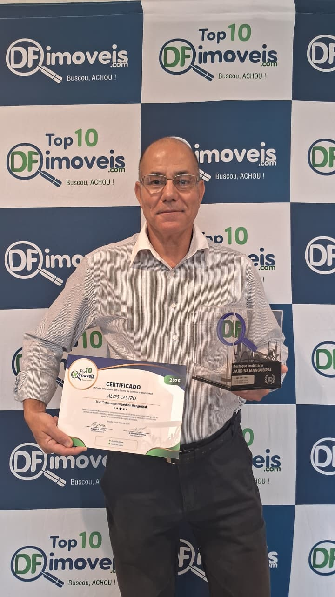

Imóveis
Sobre Mim
Com experiência em vendas desde 1988, construí uma trajetória marcada pelo compromisso, pela dedicação e pela busca constante dos melhores resultados para meus clientes. Há mais de cinco anos, atuo no mercado imobiliário, com foco no Jardins Mangueiral e no Jardim Botânico, regiões que conheço e acompanho de perto. Esse conhecimento me permite oferecer um atendimento personalizado, ajudando compradores e vendedores a tomarem decisões com mais segurança e confiança. Minha atuação conquistou reconhecimento no mercado imobiliário: fiquei entre os 10 melhores colocados pelo Portal DF Imóveis nos anos de 2024, 2025 e 2026, com destaque no Jardins Mangueiral. Essa conquista reforça minha dedicação, minha experiência e meu compromisso em oferecer um atendimento de qualidade. Acredito que comprar ou vender um imóvel vai muito além de uma negociação: é uma decisão importante que exige orientação, transparência e conhecimento de mercado. Por isso, procuro compreender as necessidades de cada cliente, identificar boas oportunidades e acompanhar cada etapa com atenção e profissionalismo. Meu compromisso é ajudar você a fazer um bom negócio, com segurança, confiança e a tranquilidade de escolher certo.
